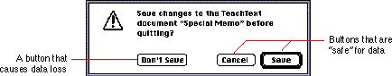

Save Changes Alert BoxThis section describes the standard alert box for saving all changes to a document before a user closes a document with unsaved changes without saving those changes or quits an application when there's an open document with unsaved changes. The design of the save changes alert box standardizes the appearance of the alert box and placement of its buttons so that users can quickly identify a potentially dangerous situation. Follow the guidelines in this section to create your save changes alert box.Use the caution alert box, which includes the caution icon in the upper-left corner. This icon indicates to users that they need to carefully consider the alert box message before clicking the default button or pressing the Return key. The caution icon should always be in the same, predictable location so that users easily recognize it as a warning and understand its meaning. The button names in the save changes alert box correlate to the action users perform by pressing the button. The buttons read Save, Don't Save, and Cancel. Using these verbs reinforces the identity of each possible action to the user. In other words, the Don't Save label provides much more context for the user than the word No does. In order to prevent accidental clicks of the wrong button, you should always keep safe buttons apart from buttons that could cause data loss. Standardizing the location of buttons in a safe configuration provides an additional safeguard for the user. Place the Save button in the lower-right corner with the Cancel button to its left. Place the Don't Save button left-aligned with the message text. Make the Save button the default button, which means that it should be linked to the Return or Enter key. This way, the user is less likely to accidentally click the Don't Save button or activate it with a keystroke and cause irretrievable loss of data. Figure 6-25 shows an example of a standard save changes alert box. Figure 6-25 The save changes alert box  Include the name of your application and the name of the document in the alert box message, as shown in Figure 6-25. When a user shuts down the computer, several save changes alert boxes may appear if there are several open documents on the desktop. This addition of contextual information to the standard message helps the user by identifying to which application and document the message refers. |